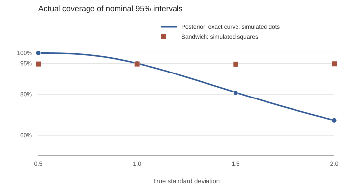

When 95% credible intervals cover 81%
In this article
A posterior can locate the right parameter and still report the wrong uncertainty.
Suppose I report a 95% Bayesian credible interval for a population mean. If I could repeat the data collection thousands of times, how often would that interval contain the mean? Under familiar conditions the answer approaches 95%. A wrong assumption about the observations' variance is enough to break that agreement.1Prompted by Anish Lakkapragada, “Bayesian Misspecification”.
The key is to distinguish two distributions. One is the posterior distribution of a parameter given this dataset. The other is the distribution of the estimator across new datasets. They have the same center asymptotically in this example, but different widths.
A deliberately wrong likelihood#
Let the true observations be independent draws from a normal distribution with mean zero and standard deviation σ. We want the mean, but fit a model that insists the standard deviation is one. Give its mean parameter a wide, proper prior:
Model: Xi | θ ∼ N(θ, 1)
Prior: θ ∼ N(0, 100)
The model is misspecified whenever σ differs from one. Still, the value of θ closest to the truth in Kullback–Leibler divergence is zero, so the fitted mean targets the right value. Completing the square gives the exact posterior:
Its central 95% interval has a half-width of 1.96/√(n + 0.01). Notice what is absent: σ. The data-generating standard deviation cannot affect the width because the fitted likelihood fixed it at one.
What repeated sampling sees#
Across fresh datasets, the sample mean has variance σ²/n. The posterior mean is only slightly shrunk toward zero by the prior, so its sampling variance is close to σ²/n too. At large n, the posterior variance is close to 1/n. The two agree only when σ = 1.
This is the one-dimensional version of the distinction between inverse curvature, H−1, and the sandwich variance, H−1JH−1, where H is expected negative log-likelihood curvature and J is score variance. Here H = 1 and J = σ². The sandwich describes how the estimate varies across samples; it is not automatically the covariance of the ordinary posterior.2Kleijn and van der Vaart, “The Bernstein–von Mises theorem under misspecification” (2012).
For a nearly flat prior and true mean zero, the actual coverage of the nominal 95% posterior interval is:
With σ = 1.5, this is 80.9%, rather than 95%. With σ = 2, it falls to 67.3%. If σ is below one, the interval is too wide and overcovers. These are repeated-sampling statements about the pseudo-true mean, not posterior probabilities conditional on any one dataset.
Check it with simulation#
I drew 50,000 independent datasets of size 100 for each true σ, keeping the fitted variance at one. For each dataset I formed the exact posterior interval and a comparison interval centered on the sample mean with standard error estimated from that dataset. The fixed-seed code and outputs are browsable in the reproduction repository.3Python script, CSV, and figure source.

| True σ | Posterior interval | Exact prediction | Estimated sandwich interval |
|---|---|---|---|
| 0.5 | 99.99% | 99.99% | 94.70% |
| 1.0 | 94.94% | 95.00% | 94.70% |
| 1.5 | 80.68% | 80.87% | 94.64% |
| 2.0 | 67.34% | 67.29% | 94.80% |

The comparison interval uses 1.96 times the sample standard error. Its coverage is about 94.7% at n = 100 because that normal approximation is slightly narrow when σ is estimated; a Student-t critical value would correct this in the normal-data example. Simulation uncertainty is about ±0.2 percentage points for coverage near 95%.
What this example does and does not say#
The ordinary posterior is internally consistent with the model it was given. It answers a conditional question under a likelihood that has fixed the variance incorrectly. If the intended claim is about repeated-sampling coverage, the variance assumption has to be checked or the uncertainty calculation has to account for its failure.
This example is intentionally narrow: independent normal observations, one mean parameter, and a known zero true mean used only for evaluation. It does not establish that a sandwich interval solves every form of misspecification. Dependence, changing distributions, and biased pseudo-true targets need separate treatment. Its useful lesson is more basic: getting the center right does not guarantee getting the uncertainty right.
Cite this essay
@misc{somu2026credibleintervals,
title = {When 95\% credible intervals cover 81\%},
author = {Somu, Arya},
year = {2026},
url = {https://aryasomu.com/writing/when-95-percent-credible-intervals-cover-81-percent.html}
}